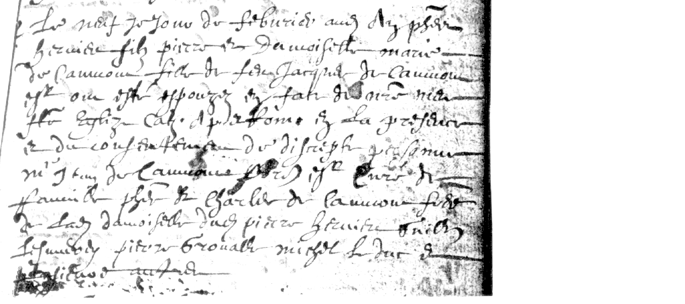
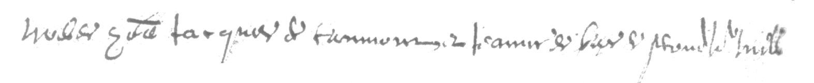

REGISTRES PAROISSAUX (1/2) REGISTRES PAROISSAUX (1/2)
REGISTRES PAROISSAUX (1/2) REGISTRES PAROISSAUX (1/2)
SAINT-SAMSON-DE-BONFOSSÉ
Provenance : Mairie de Saint-Samson-de-Bonfossé

"Le neuf Ie[me] Jour de febvrier
aud[it] An [1651] Phi[lippe]
hervieu filz pierre et Damoiselle marie
de Caumont fille de feu Jacques de Caumont
esc[uyer] ont été espouzez en face de n[ot]re mere
S[ain]te Eglize Cath[olique] Ap[ostolique] et Rom[aine] en la
presence
et du consentement de discrepte personne
m[ait]re Jean de Caumont p[re]tre esc[uyer] Curé de
Rauville phi[lipp]e et Charles de Caumont freres
de lad[ite] damoiselle dud[it] pierre hervieu Guill[aume]
Lesmerey pierre Groualle michel Le duc et
plusieurs autres"
Le 9 février 1651 à Saint-Samson-de-Bonfossé a
eu lieu le mariage entre :
Philippe HERVIEU, Sieur de l'Epine
Né le 22 mars 1623 à Saint-Samson-de-Bonfossé.
Troisième enfant de Pierre HERVIEU et Anne GOHIER. Lors de son
mariage, il était âgé de 27 ans.
Décédé le 29 avril 1696 à
Saint-Samson-de-Bonfossé à l'âge de 73 ans.
Signature : oui.
et
Damoiselle Marie de CAUMONT
Née vers 1630 à Gourfaleur. Enfant de Jean de CAUMONT
et Anne LEBAS. Décédée le 5 février 1702
à Saint-Samson-de-Bonfossé. Signature : non.

7 enfants sont nés :
1. Jeanne HERVIEU, née le 24 octobre 1651 à
Saint-Samson-de-Bonfossé. Union avant 1674 avec Pierre LEMERAY
la Fontaine. Décédée le 24 novembre 1720
à Saint-Samson-de-Bonfossé à l'âge de 69
ans ;
2. Philippe HERVIEU, union le 6 juin 1694 à
Saint-Samson-de-Bonfossé avec Louise VIEILLARD ;
3. Pierre HERVIEU ;
4. Jacqueline HERVIEU, née le 28 février 1666 à
Saint-Samson-de-Bonfossé. Union le 20 avril 1697 à
Saint-Samson-de-Bonfossé avec Jean VIMEL.
Décédée en 1741 à
Saint-Samson-de-Bonfossé à l'âge de 74 ans ;
5. Anne HERVIEU, née vers 1668. Union le 28 février
1688 à Saint-Samson-de-Bonfossé avec Jean LEMPERIERE
;
6. Gabriel HERVIEU, né le 19 janvier 1669 à
Saint-Samson-de-Bonfossé. Union le 2 mars 1699 à
Saint-Samson-de-Bonfossé avec Marie GROULT ;
7. Olivier HERVIEU, né vers 1690. Union en juillet 1730
à Saint-Samson-de-Bonfossé avec Michelle BASIRE.
Provenance : Mairie de Moon-sur-Elle

1606
Noble ho[mm]e Jacques de Caumont et Jeanne le bas espousés ??
juillet
Provenance : Archives Départementales de
la Manche, Claudine Delorme ;
Jean-Louis Lenoir
https://www.archives-manche.fr/ark:57115/s005e5d521bc00bb/5e5d521ddcbf3.fiche=arko_fiche_65772c636b6ee.moteur=arko_default_635b873d1f4a7
Magdalaine fille de Guillaume de CAUMONT escuier
a este baptisee et nommee par Magdaleine femme
de Guillaume Biree le vendredy douz[iem]e jour
d'Apvril aud[it] an [1630] presence de Loys Debert et
plusieurs autres.
|
|
J'ay audiencé le dimanche
quatorzee jour |
Marguerite de CAUMONT, mariée à Hughes de BAYEUX
décédée le 23-05-1780 âgée de 84 ans.
Union entre Jacques
de CAUMONT et Marie AUBRIL,
2 enfants sont nés :
1. Etienne de CAUMONT,
décédé après 1741
présence : - 28-11-1741 X REGNAUT-VOIDIE, oncle de
l'époux ;
2. Marie de CAUMONT, née vers
1686. Union le 2 février 1704 à Graignes avec Michel
REGNAULT. Décédée le 15 novembre 1766 à
Montmartin-en-Graignes.
"Le deuxiesme febvrier 1704 se sont
présentés Michel REGNAULT fils de Jean et de Marie VOYDIE
ses père et mère d'une part et Marie
de CAUMONT fille de Jacques et de Marie AUBRIL ses père
et mère d'autre part tous deux de cette paroisse auxquels
après deux publications de leurs bans et vue la dispense obtenue
de la publication du troisiesme les dits baons duement affichés
suivant l'ordonnance et après les avoir fiancé ne
s'estant trouvé aucun empeschement nous avons donné la
bénédiction nuptiale selon la forme prescrite par la
sainte Eglise."
Michel REGNAULT,
Né vers 1667 à Graignes. Enfant de Jean REGNAULT et
Marie VOYDIE. Décédé le 31 octobre 1737 à
Graignes ;
ACTE DE DECES
"Michel REGNAUD aagé d'environ soixante et dix ans est
décédé du trente et un octobre a esté
inhumé le premier jour de novembre (1737) en suivant par moy
curé soussigné dans le cimetière de ce lieu aux
présence de Thomas FOLLIOT et de Michel LE LIEVRE prestre et
vicaire."
Marie de CAUMONT,
Née vers 1686, enfant de Jacques de
CAUMONT et Marie AUBRIL. Décédée le 15
novembre 1766 à Montmartin-en-Graignes ; âge au
décès : 80 ans ;
8 enfants sont nés :
1. Pierre REGNAULT, né le 25 avril 1705 à Graignes.
Témoins : 1. Pierre REGNAULT, parrain ; 2. Marie THIEBOT,
marraine, femme du parrain. Union le 2 septembre 1738 à Graignes
avec Anne YVER. Décédé après 1741 ;
2. Jean REGNAULT, né le 19 mai 1707 à Graignes.
Témoins : 1. Jean REGNAULT, parrain; 2. Marie VOYDIE, marraine,
femme du parrain ;
3. Michel REGNAULT, né le 19 janvier 1709 à Graignes.
Témoins : 1. Michel VOYDIE, parrain ; 2. Marguerite VOYDIE,
marraine, femme du parrain. Union le 28 novembre 1741 à
Montmartin en Graignes avec Anne Françoise VOIDIE.
Décédé le 24 juin 1791 à Montmartin en
Graignes à l'âge de 82 ans ;
4. Marie REGNAULT, née le 27 janvier 1712 à Graignes.
Témoins : 1. Marie AUBRIL, marraine, vivant à Montmartin
en Graignes ; 2. Pierre VIMARD, parrain, mari de la marraine, vivant
à Montmartin en Graignes ;
5. Jean REGNAULT, né le 10 décembre 1714 à
Graignes. Témoins : 1. Louis VOYDIE, parrain ; 2. Jeanne FERON,
marraine ;
6. Anne REGNAULT, née le 29 août 1717 à Graignes ;
7. Etienne REGNAULT, né le 2 septembre 1721 à Graignes.
Union le 24 juillet 1753 à Graignes avec Anne LECOURTOIS ;
8. Jeanne REGNAULT, née le 29 septembre 1726 à Graignes.
Jacques Jean Lô de CAUMONT, Décédé le 5 juin 1817 à Graignes marié avec Jeanne FERON, décédée avant 1826.
3 enfants au moins sont nés :
1. Pierre, né le 5 avril 1774 au Dézert. Union avec
Victoire LAMOUREUX (voir aussi Service historique de la marine : 5P6/34
nouveau matricule f° 663 n°9)
2. Jean François, né vers 1777 à Graignes
3. Jeanne, née vers 1785 à Graignes. Union avec Auguste
Louis THOMASSE. Décédée le 26 septembre 1826
à Saint-Lô
Le 23 avril 1700, baptême de Marie de Caumont (http://recherche.archives.manche.fr/?id=viewer&doc=accounts%2Fmnesys_ad50%2Fdatas%2Fir%2Fetat_civil%2FFRAD050_etat_civil.xml&page_ref=340540&lot_num=1&img_num=3) :
Le 8 mai 1700, Inhumation de Michel de Caumont (http://recherche.archives.manche.fr/?id=viewer&doc=accounts%2Fmnesys_ad50%2Fdatas%2Fir%2Fetat_civil%2FFRAD050_etat_civil.xml&page_ref=340540&lot_num=1&img_num=4) :
Le 11 novembre 1700, Baptême de Michel Folliot (http://recherche.archives.manche.fr/?id=viewer&doc=accounts%2Fmnesys_ad50%2Fdatas%2Fir%2Fetat_civil%2FFRAD050_etat_civil.xml&page_ref=340540&lot_num=1&img_num=6) :
Le 10 février 1722, mariage de Michel Lecanu et Charlotte Fourmi (http://recherche.archives.manche.fr/?id=viewer&doc=accounts%2Fmnesys_ad50%2Fdatas%2Fir%2Fetat_civil%2FFRAD050_etat_civil.xml&page_ref=340618&lot_num=1&img_num=38) :
Le 28 juillet 1747, inhumation d'Etienne de Caumont
Le vingt huit juillet audit an [1747] a
été par nous curé du mesnil
angot soussigné inhumé dans l eglise de ce lieu le corps
d estienne decaumond
decedé d hier aagé d environ
trente deux ans muny des s[ain]ts sacrement de l eglise
presences de thomas folliot jean voydies custos de
m[aîtr]e joachim baudry vicaire et autres soussignés
Signatures de Baudry et Voydie
Provenance : Mairie de Gourfaleur, Claudine
Delorme +
Archives Départementales de la Manche
Le 20 octobre 1682
Provenance : Archives Départementales de la Manche
Le 1er janvier 1629 inhumation
dans la nef de l'église de Gilette de
CAUMONT, femme de Jean PAIN.
Le 29 mai 1656
Provenance : Jean-Louis Lenoir,
dépouillements de
M. Maillard et de Jean-Louis Lenoir
Le 15-11-1766 inhumation de Marie de CAUMONT 80 ans, veuve de Michel RENAUT.
Anne de CAUMONT (+ : 31-01-1808 à 62 ans) mariée
à Antoine LE PICARD parents de :
- Antoine, né le 03-11-1768 ;
- Marie Anne, née le 02-07-1773 ;
- Thomas Charles, né le 04-11-1774 ;
- Geneviève Charlotte, née le 19-03-1776.
Jacques de CAUMONT, père d'un enfant âgé de 10
ans décédé le 09-12-1713.
Jeanne de CAUMONT mariée à Jean THIEBOT, parents de :
- Jean Louis, marié le 27-02-1866 avec Pauline Jeanne BAZIRE,
fille de Jacques et feue Pauline OSBERT.
Hélène de
CAUMONT mariée à
François FOLLIOT, parents de :
- Sophie Prudence, mariée le 02-05-1875 avec Pierre FAUTRAD,
fils de feu Pierre et Marie LECAMPION ;
- Eloïse Marie, mariée le 10-02-1870 avec Augustin
LANGLOIS, fils de feu Auguste et Marie MOULINS.
Provenance : Archives Départementales de
la Manche
Le 06-06-1769 mariage de Jean
François FÉRON, fils de feu Jacques et feue Marie
BAILLEUL de Saint-Jean-de-Daye avec Marie Marguerite RAULINE fille de
Jacques et Marie LARUE, d'Amigny à présent au
Dézert ; présences (parmi d'autres) : Jacques de CAUMOND, beau-frère.
BAUDRE
Référence : Registres
paroissiaux de Baudre et 120 J 44 notes Baudre-Lepingard
Provenance : Archives Départementales de
la Manche
Le 3 août 1642
Le
dimanche troisiemme jour d aout l'an
mil six cent quarante deux le sacrement
de mariage fut faist & celebre entre Jacques
Le monier fils Francois de st ouen de baudre & de Jacquelinne
de Caumonst de la
paroisse de gourphaleur
Le 8 avril 1643
Le
mercredy huytieme jour dapvril mil six cent
quarante trois fut baptisée magdalene fille
de Jacque le monnier et
Jacqueline de
Caumont ces pere et mere
et fut
nommee par marie lescuier et francois le
monnier
Le 5 janvier 1647
Le
semedy cinquiemme jour de janvier
mil six cent quarante sept furent baptises
jean baptiste et pierre fils de jacques
le monnier et Jacqueline
decaumont
leur pere et mere le dit jean baptiste
nomme par charles et marie dit de
caoumont escuier et le
dit pierre par
pierre le monnier et jehenne le
bas parint & marinne
Le 14 février 1651
Le
quatorze Jour de febvrier aud[it] an [1651] a esté
baptizée Marie Le Monnier fille de Jacques
Le Monnier et de Jacqueline de
Caumont ses
pere & mere et a esté nommée par Marie
Le Monnier & philippe hervieu ses parin & marrine
Le 21 mai 1652
Le
vingt un de may 1652 a Esté baptizée Marie Le
Monnier fille de Jacques Le Monnier & Jacqueline
de caumont et a
esté nommée par Marie du four
& Jacques le bas
Le 24 février 1654
Le
vingt quattre de febvrier audict an [1654]
Judith le monnier fille de jacques le monnier
et de jacqueline de caumont
a este baptizee
et a esté nommée par Marie de Caumont
et jean baptiste Le monnier par le ministaire
de M. Mazeline pbre vicaire de ce Lieu
Le 25 mars 1654
Le
vingt cinq de mars aud[it] an [1654] a esté inhumée
Jacqueline de caumont f[emm]e
de jacq[ues] lemonnier
dedans l Eglise en sa place
Le 18 février 1680
Le 18 de febvrier 1680 le sacrement
de mariage a este celebre en lesglise de
S[ain]t ouen de baudre entre francois le
monnier s[ieu]r de la macherie fils de feu
Jacques le monnier et de damoiselle
Jacqueline de caumont ses
pere et
mere d'une part et d honeste
fille magdeleine le chevalier
fille de feu honorable homme Jean le
chevalier Marchand droguiste et bourgeois
de s[ain]t lo et d honeste femme Jenne le
comte ses pere et mere d autre part
presence de honorable et discrette personne
M[aîtr]e Jacques le monnier pbre cure de la
paroisse de s[ain]t lo d ourville charle de caumont
escuier s[ieu]r de la pesquerie Romphaire
le monnier s[ieu]r de la chesnée et Jean
Rouillard s[ieu]r de Lourmé Joachim Jean
s[ieu]r de livé pierres beslin s[ieu]r de la fontaine
phillipe le monnier fils de feu lo[uis]
Lemonnier s[ieu]r de la chesnée Guillaume
dufour, M[aîtr]e nicolas Mazeline pbre
et de pierre cheuvreul pbre cure de la
paroisse de s[ain]t ouen de baudre
Provenance : Archives Départementales de
la Manche
Le 25 octobre 1725, mariage de Philippe Lecanu et Marie Anne Tresgots (http://recherche.archives.manche.fr/?id=viewer&doc=accounts%2Fmnesys_ad50%2Fdatas%2Fir%2Fetat_civil%2FFRAD050_etat_civil.xml&page_ref=118270&lot_num=1&img_num=24) :
Référence :
Répertoire des Baptêmes, Mariages, Sépultures de
Saint-Etienne de Caen ; CéGéCal, avril 1997
Provenance : Archives Départementales du
Calvados
Inhumation de Louise Colombe de
Caumont, 70 ans, le 23 septembre
1743.
Référence
: Inventaire sommaire des Archives départementales
antérieures à 1790. Calvados. Archives civiles.
Série C (1867)